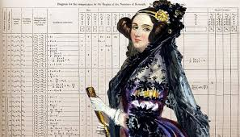
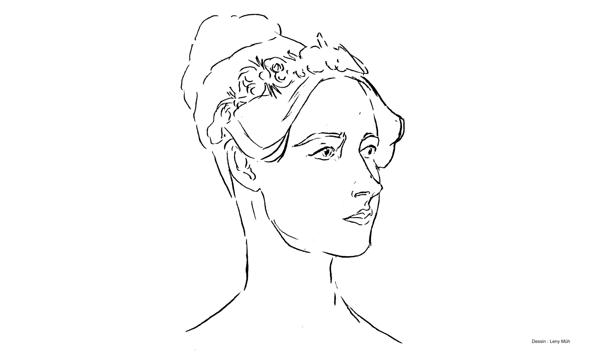

Le premier programme informatique est créé au XIXe siècle en Angleterre. C’est la pionnière Ada Lovelace, d’abord appelée Augusta Ada, qui le crée en collaboration avec Charles Babbage. En effet, en 1843, ce dernier demande à Ada Lovelace de traduire le texte français de l’ingénieur Luigi Menabrea. Le texte traitait les aspects théoriques de la machine créée par Charles Babbage. La traduction fut accomplie par la jeune femme entre 1842 et 1843 à laquelle elle ajouta sept notes, labellisées de A à G. La note G s’appuie sur un algorithme destiné à calculer une référence appelée "nombres de Bernoulli", avec la machine à différences. Le programme qui en résulte est considéré comme le premier véritable programme informatique de l’histoire, dans un langage destiné à être exécuté sur une machine.

Ce modèle de machine analytique est similaire au dispositif de calcul sur lequel Ada Lovelace a travaillé avec Charles Babbage.
En 1843, Babbage développa la machine analytique, une version plus complexe de la machine à différences. Il demanda à Lovelace de traduire le texte français de son ingénieur en anglais. Elle passa neuf mois, entre 1842 et 1843, sur cette traduction. Ada Lovelace traduisit non seulement les notes, mais ajouta les siennes, les signant « AAL ».
Ces notes sont le fruit d'un travail frénétique, en collaboration étroite avec Charles Babbage qui annote les brouillons. Elle ajouta à l'article original sept notes, labellisées de A à G, représentant près de trois fois le volume du texte d'origine. La note G s'appuie sur un algorithme très détaillé pour calculer les nombres de Bernoulli avec la machine à différences. Le programme qui en résulte est considéré comme le premier véritable programme informatique au monde, dans un langage véritablement destiné à être exécuté sur une machine.
Certaines de ces notes comparent la conception de la machine analytique au fonctionnement des machines à tisser. Les machines à tisser suivent des modèles pour créer un dessin complet et pour Ada Lovelace, la machine analytique pouvait également suivre des modèles - ou des codes - non seulement pour faire des calculs, mais aussi pour former des lettres. C'est une explication très basique de la programmation informatique.
Charles Babbage ne reçut jamais assez de financement pour terminer sa machine analytique et les notes d'Ada Lovelace tombèrent dans l'oubli. Mais en 1953, ses notes ont été republiées dans un livre sur l'informatique numérique qui montrait comment les ordinateurs fonctionnent en suivant des modèles. Bien avant l'invention du premier ordinateur, Ada Lovelace avait eu l'idée d'un langage informatique.
